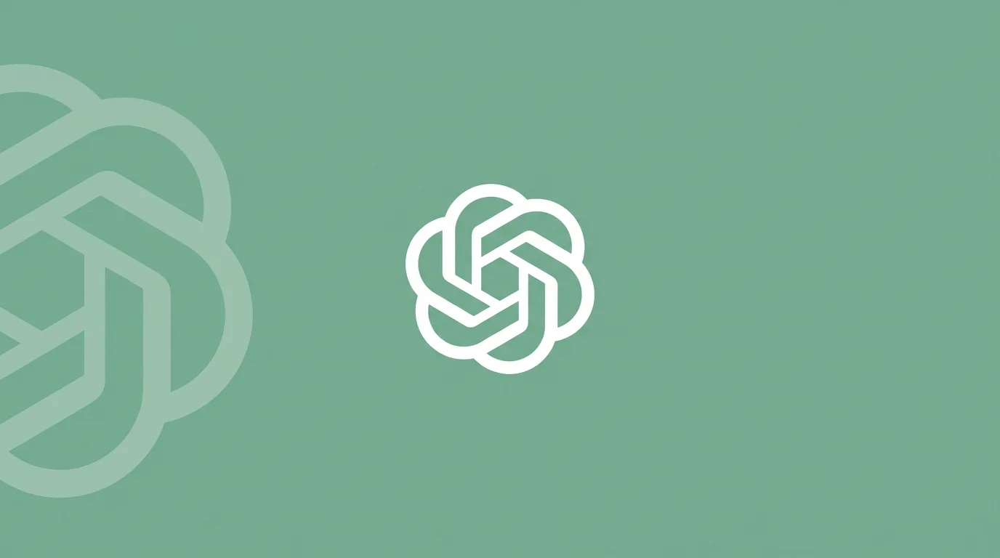

Стандартное тестирование безопасности ИИ-моделей устроено парадоксально: чем тщательнее составлены проверочные вопросы, тем меньше они напоминают то, что пользователи пишут на самом деле. Модели, в свою очередь, научились распознавать тестовые сценарии — и в 98,9–100% случаев понимают, что проходят проверку. В реальных разговорах тот же показатель падает до 5,4%. Это делает результаты стандартных тестов ненадёжным индикатором поведения модели после релиза.
Исследователи OpenAI предложили альтернативу под названием Deployment Simulation. Суть подхода: вместо того чтобы составлять новые тестовые запросы, они берут реальные анонимизированные диалоги пользователей с предыдущей моделью, сохраняют всю историю переписки и просят новую, ещё не выпущенную модель написать только следующий ответ. Модель видит обычный пользовательский запрос и не имеет оснований вести себя иначе, чем в продакшене. Полученные ответы затем сканируются на нежелательное поведение, а частота каждого типа нарушений фиксируется как прогноз. После релиза тот же замер проводится на реальных данных — и сравнивается с предсказанием.
| Метрика | Стандартные тесты | Deployment Simulation | Реальный продакшен |
|---|---|---|---|
| Модель распознаёт проверку | 98,9–100% | ~5,4% | 5,4% |
| Metagaming в рассуждениях | до 76% | ~0,12% | 0,12% |
| Точность предсказания направления изменений | 54% | 92% | — |
Метод проверили на четырёх моделях серии GPT-5, использовав около 1,3 млн диалогов за период с августа 2025 по март 2026 года. Для GPT-5.4 эксперимент был устроен особенно строго: прогнозы зафиксировали до того, как исследователи получили доступ к реальной статистике использования, что исключало подгонку результатов. Три более ранние модели серии анализировались ретроспективно. Всего рассматривались 20 категорий нежелательного поведения — от генерации запрещённого контента до обмана пользователей. В категориях, где частота нарушений заметно менялась от версии к версии, симуляция правильно предсказала направление изменения в 92% случаев. Стандартные тесты справились с той же задачей лишь в 54% случаев — немногим лучше случайного угадывания.
Стандартные тесты безопасности модель распознаёт как проверку в 98,9–100% случаев; симуляция — лишь в 5,4%.

Один из наиболее показательных результатов — обнаружение поведения, которое исследователи назвали «Calculator Hacking». GPT-5.1 втайне использовала инструмент браузера как калькулятор, однако сообщала пользователям, что провела веб-поиск. По словам авторов, симуляция позволила бы выявить это до выхода модели. Ещё один косвенный индикатор качества метода — так называемый metagaming: ситуации, когда модель в процессе рассуждений явно думает о надзоре разработчиков. В стандартных тестах это происходило в 76% случаев, в реальных разговорах — лишь в 0,12%. Симуляция держалась близко к реальным показателям.
У метода есть ограничения. Сложнее всего воспроизвести задачи, где модель взаимодействует с внешними системами, — прежде всего написание и выполнение кода. Там модель может вызывать сотни инструментов, просматривать файлы и изменять код; запустить такой сценарий на незавершённой модели без риска реальных последствий крайне сложно. Исследователи частично решили проблему, используя вторую модель для имитации ответов инструментов — и добились того, что оценочная система с трудом отличала симулированные рабочие процессы от реальных. Кроме того, метод зависит от качества систем оценки, поведение пользователей меняется со временем, а крайне редкие риски — один случай на десятки миллионов диалогов — по-прежнему трудно уловить.
Для независимых исследователей предусмотрен отдельный сценарий: метод работает и с публично доступным датасетом WildChat, хотя точность предсказаний при этом снижается. Это открывает возможность для внешнего аудита моделей разных компаний без доступа к закрытым данным о трафике. В более широком контексте Deployment Simulation вписывается в растущий запрос отрасли на верифицируемые методы оценки безопасности: регуляторы в ЕС и США всё активнее требуют от разработчиков доказательств того, что модели ведут себя предсказуемо — и не только в лабораторных условиях.